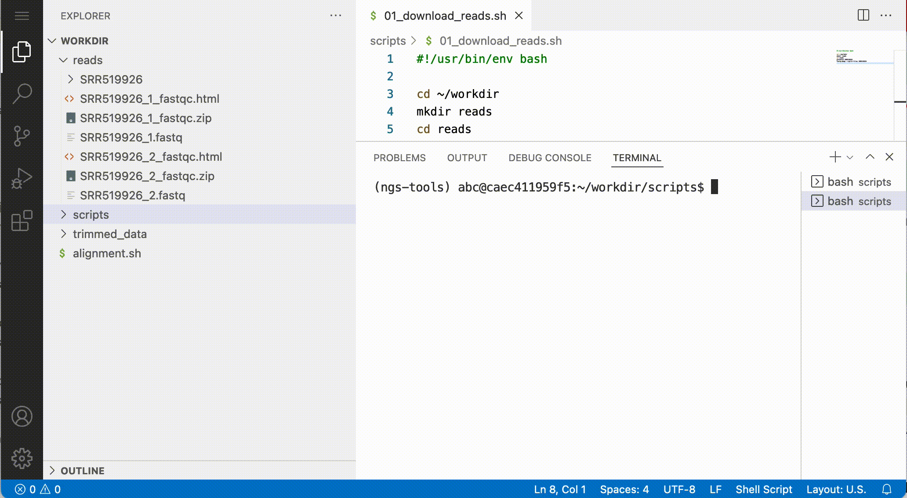
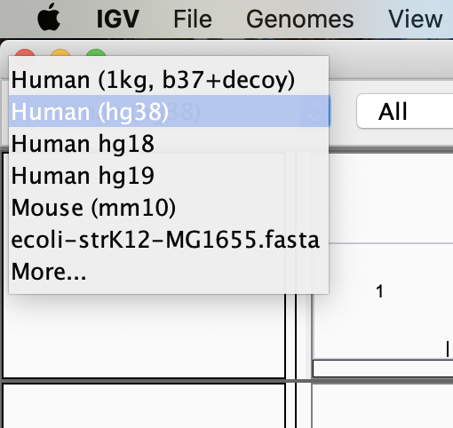
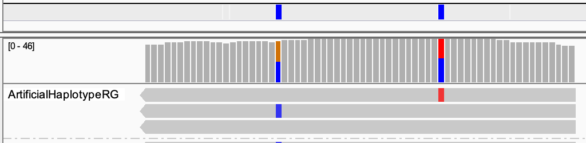
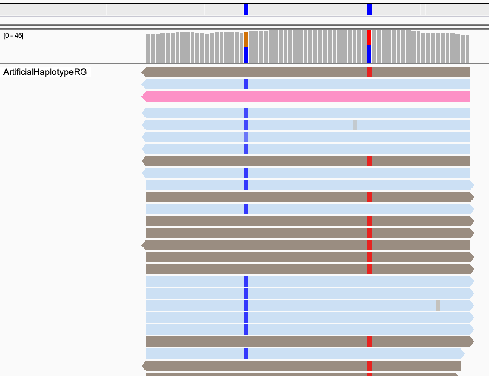

Visualisation
Learning outcomes¶
After having completed this chapter you will be able to:
Use IGV to:
- Visualise read alignments that support called variants
- Visualise phasing information generated by
gatk
Material¶
Exercises¶
Download the following files to your local computer:
variants/mother.phased.bamvariants/mother.phased.baibqsr/mother.recal.bambqsr/mother.recal.baivariants/mother.HC.vcf
Downloading files
You can download files by right-click the file and after that select Download:

Launch IGV and select the human genome version hg38 as a reference.

Load the downloaded files as tracks in igv with File > Load From File..., and navigate to region chr20:10,026,397-10,026,638.
Exercise: Zoom out for a bit. Not all reads are in the track of mother.phased.bam. What kind of reads are in there?
Answer
The reads supporting called variants.
Now, we'll investigate the haplotype phasing. Go back to chr20:10,026,397-10,026,638.
Tip
If your screen isn't huge, you can remove the track mother.recal.bam. Do that by right-click on the track, and click on Remove Track.
In the track with mother.phased.bam, right click on the reads and select Group alignments by > read group. This splits your track in two parts, one with artificial reads describing haplotypes that were taken in consideration (ArtificalHaplotypeRG), and one with original reads that support the variants.
Exercise: How many haplotypes were taken into consideration? How many haplotypes can you expect at maximum within a single individual?
Hint
This might come as a shock, but humans are diploid.
Answer
Three haplotypes, as there are three artificial reads:

Diploids can carry two haplotypes. So at least one of the three is wrong.
Now colour the reads by phase. Do that with by right clicking on the track and choose Colour alignments by > tag, and type in "HC" (that's the tag where the phasing is stored).
Exercise: Which artificial read doesn't get support from the original sequence reads? Are the alternative alleles of the two SNPs on the same haplotype (i.e. in phase)?
Answer
The track should look like this (colours can be different):

The reads only support the brown and blue haplotype, and not the pink one.
The alternative alleles are coloured in IGV. For the first SNP this is the C (in blue) and for the second the T (in red). They are always in different reads, so they are in repulsion (not in phase).